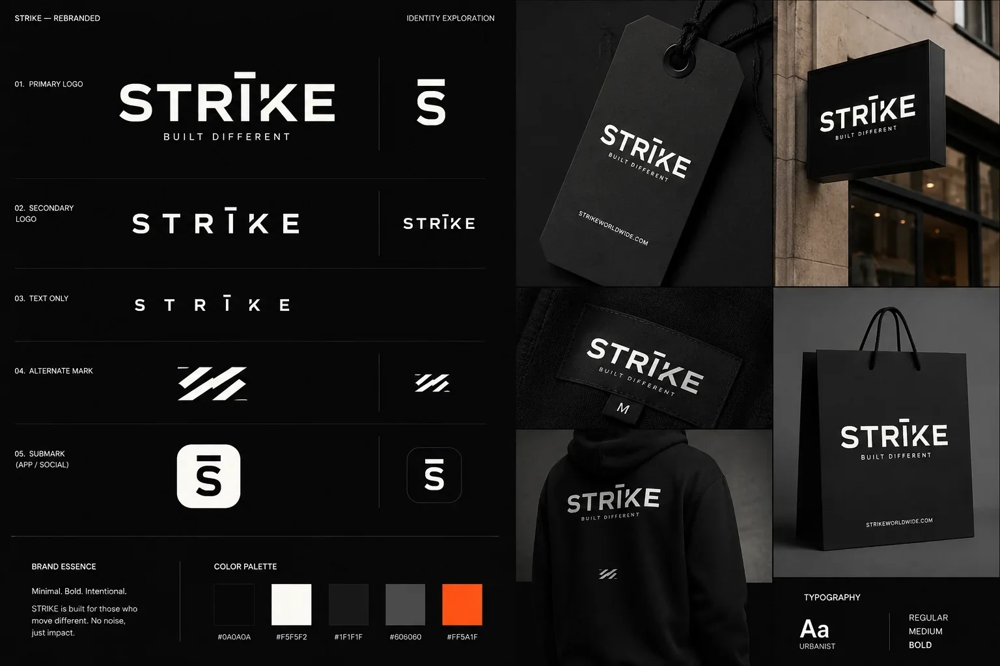
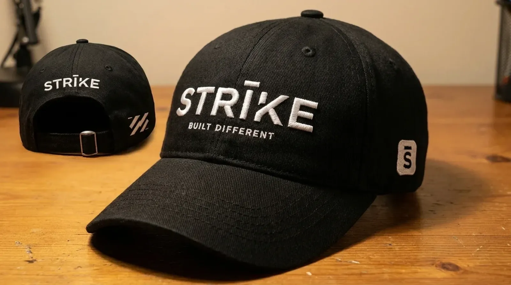

E-Commerce
Frontend Engineer
Shipped
2024
STRĪKE
A premium streetwear e-commerce experience built as a single, tightly composed React application with a focus on cinematic visual design, buttery-smooth animations, and a checkout flow that converts.
The Brief
The client came to me with a clear, demanding vision: a streetwear brand that needed to feel as premium as the clothes it was selling. They had seen too many Nigerian fashion e-commerce sites that looked like templates generic layouts, stock imagery, zero personality.
They wanted something that would stop a visitor in their tracks. Something that communicated quality before a single product was clicked.
Design Philosophy
I approached STRĪKE as a fashion editorial, not a product catalog. The design language draws from high-fashion lookbooks: full-bleed imagery, deliberate negative space, a monochromatic base palette punctuated by a single saturated accent, and typography that commands attention.
Every interaction hovering a product card, adding to cart, proceeding to checkout is animated with purpose. The animations aren't decorative; they communicate state and guide the user's attention.
Performance Challenge
High-fidelity fashion imagery and smooth animations are often at war with page performance. On STRĪKE, I implemented a custom image loading pipeline: progressive JPEG loading with a blurred placeholder, intersection-observer-based lazy loading, and a WebP conversion step in the Sanity CMS asset pipeline. Lighthouse score: 94.
Key Features
- Cinematic hero section video background with parallax overlay text and a magnetic CTA button
- Product quick-view Framer Motion-powered drawer that slides in without leaving the page
- Size guide modal Interactive measurement guide with a dynamic fit recommendation engine
- Cart drawer Real-time cart with live stock checking and a streamlined 2-step checkout
- Stripe integration Full Stripe Checkout integration with webhook-based order confirmation
- Sanity CMS backend The client can add, update, and manage products, lookbook content, and inventory without touching code
Tech Stack
React
Vite
Framer Motion
Stripe
Sanity CMS
GROQ
Vanilla CSS
Vercel
Interface Showcase


Outcome
STRĪKE is live at str-ke.vercel.app, running the storefront end to end: catalogue, product quick-view, cart drawer and Stripe checkout, with the brand managing products and lookbook content in Sanity without touching code.
I don't have client-approved performance figures to publish, so I've left the numbers out rather than estimate them.
This project cemented my belief that great frontend engineering is not about showing off technical complexity it's about removing friction and creating emotional confidence in the user.
Need a premium web experience?
I build e-commerce and brand websites that convert through Greene Studios or directly.